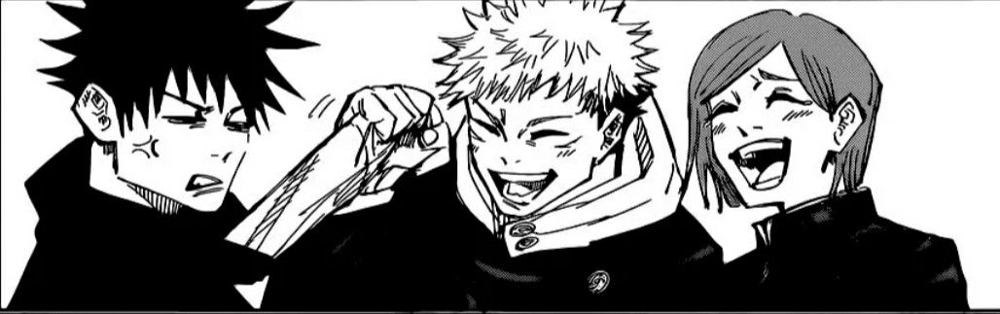

Em um mundo onde maldições nascem dos sentimentos mais sombrios da humanidade, três jovens feiticeiros seguem caminhos marcados por dor, coragem e escolhas impossíveis. Jujutsu Kaisen acompanha a determinação explosiva de Yuji Itadori, a frieza estratégica de Megumi Fushiguro e a personalidade feroz de Nobara Kugisaki. Unidos por batalhas brutais e laços intensos, eles descobrem que ser forte vai muito além de derrotar inimigos, significa proteger aquilo que ainda dá sentido à vida.